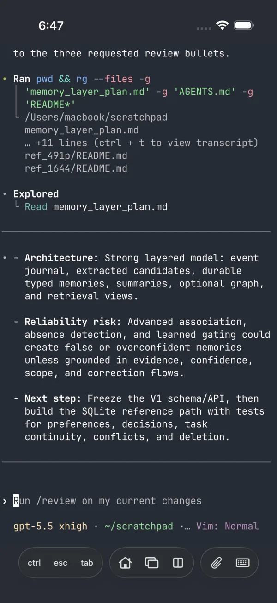
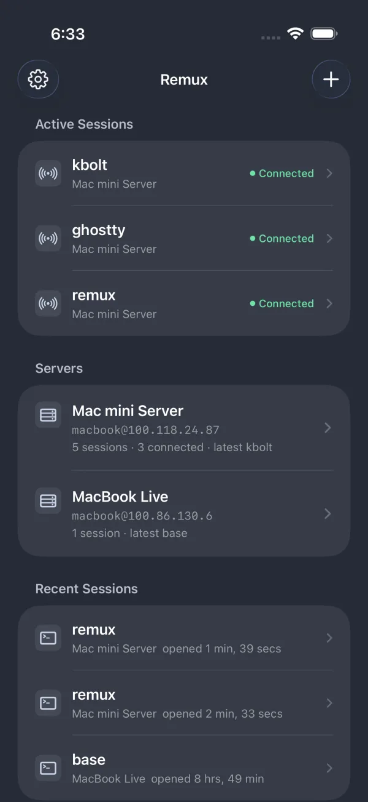
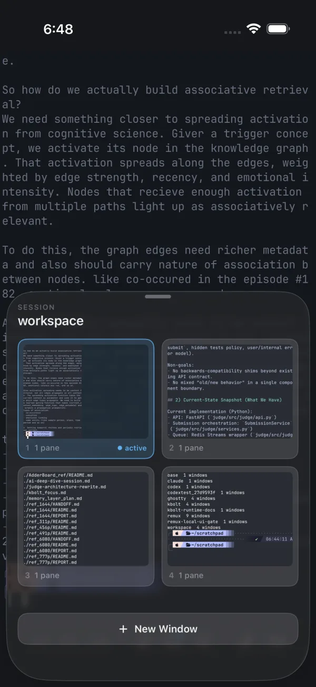
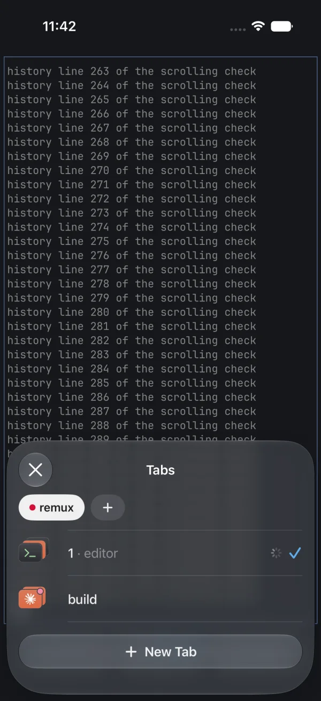
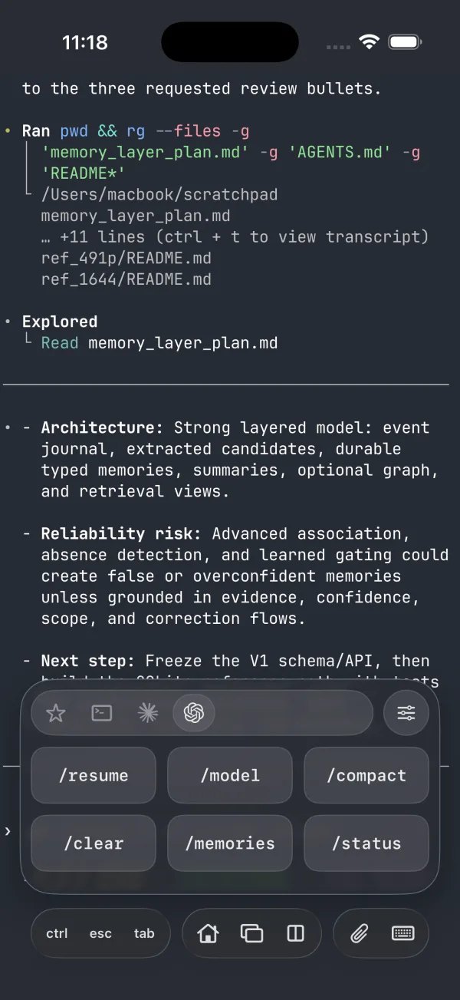
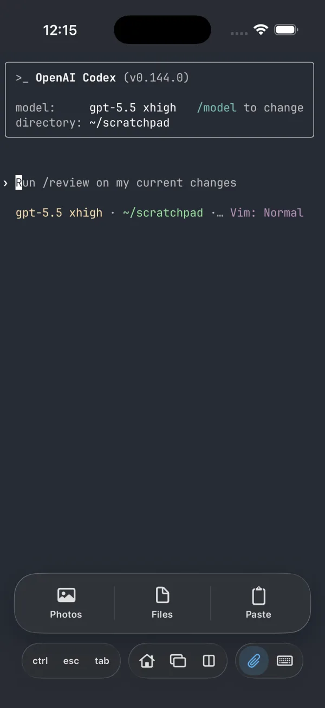
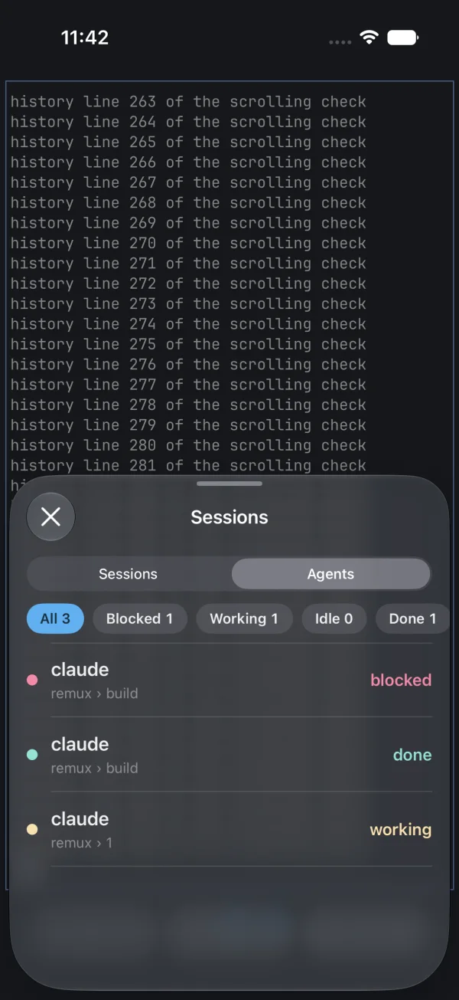

remux
A native iOS client for tmux and herdr.
Remux attaches to your tmux and herdr sessions over SSH.
- phone
- iPhone, iOS 18 or later
- server
- tmux 3.1+ or herdr 0.9.3+, over SSH

Sessions
Remux stays attached to sessions on several servers at once, and you can move between them easily.

Windows, tabs and panes
Your windows, tabs and panes come across as they are on the server.
- Swipe to move between windows or tabs, or jump straight to any of them from the toolbar.
- A window with several panes shows one at a time, with a map of the layout to switch between them.


Typing
- Toolbar keys: Three terminal keys sit in the toolbar, ctrl, esc and tab by default, and you can swap any of them for other keys in Settings.
- Shortcuts: Hold the first toolbar key to open your saved commands. They start with sets for the shell, Claude Code and Codex, and you can add your own, group them and pick favorites.
- Composer: Write a prompt, or dictate it on-device.
- Arrow keys: Touch and hold the terminal and drag to send arrow keys in that direction, like a joystick. Drag further to repeat them faster.
- Hardware keyboards work too, including Ctrl key combinations.

Files
To give an agent a screenshot or a file, attach it to a message: Remux uploads it to your server and adds its path. Images can be marked up first.

Previews
A long press on a file path opens it in a preview, whether it's code, an image, a PDF or an HTML page. A localhost address works the same way and opens the dev server running on that machine.
herdr
- Remux shows each agent's state on its session, workspace, tab and pane.
- The Agents list gathers the agents from your open herdr sessions, sorted by priority.
- While you're in Remux, a banner tells you when an agent needs you or finishes. Tapping it, or an agent in the list, takes you to its pane.

How it connects
Remux works with the tmux or herdr you already have on your server. It connects directly over SSH, without a relay or an account.
- Sign in with a password, a private key, Tailscale SSH or a Secure Enclave key that never leaves your iPhone.
- Remux doesn't collect analytics or crash reports.
Install
Remux is in public beta on TestFlight. It's open source under the MIT license.